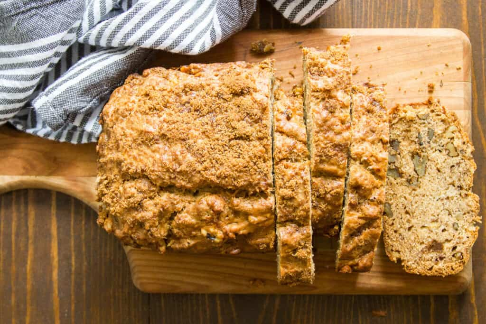

Vegan Banana Bread

Description
Vegan banana bread is the perfect way to get rid of some of those old bananas
and make a delicious treat that works well as a snack or breakfast item. This
recipe uses easily obtainable ingredients and doesn't rely on unusual substitutions.
You can add your favorite nuts or other toppings as part of the bread
or sprinkled on top!
Ingredients
- 3 medium overripe bananas
- ⅓ cup organic granulated sugar
- ⅓ cup organic brown sugar
- ⅓ cup canola oil
- 2 teaspoons vanilla extract
- 2 cups all-purpose flour
- 1 teaspoon baking soda
- 1 teaspoon ground cinnamon
- 1 teaspoon salt
- 1 cup chopped walnuts (or pecans, vegan chocolate chips, or your favorite banana bread stir-in)
Steps
- Preheat the oven to 350°.
- Lightly oil a 9-inch loaf pan and arrange a strip of parchment paper width-wise along the center, with just a bit hanging out over each side.
- Peel the bananas and place them into a large mixing bowl. Mash them well with a fork or potato masher.
- Add sugar, brown sugar, oil, and vanilla to the bowl. Stir until well-mixed.
- Add the flour to the bowl, then sprinkle the baking soda, cinnamon and salt on top of the flour.
- Stir everything together just until mixed. Don't overmix. The batter will be thick.
- Fold in the walnuts.
- Spoon the batter into the prepared loaf pan and smooth out the top with the back of a spoon.
- Sprinkle the top with brown sugar.
- Bake for 50 minutes, or until a toothpick inserted into the center comes out clean.
- Remove the pan from the oven and transfer it to a wire rack. Allow the loaf to cool for at least 15 minutes before removing it from the pan.
- Slice and serve.